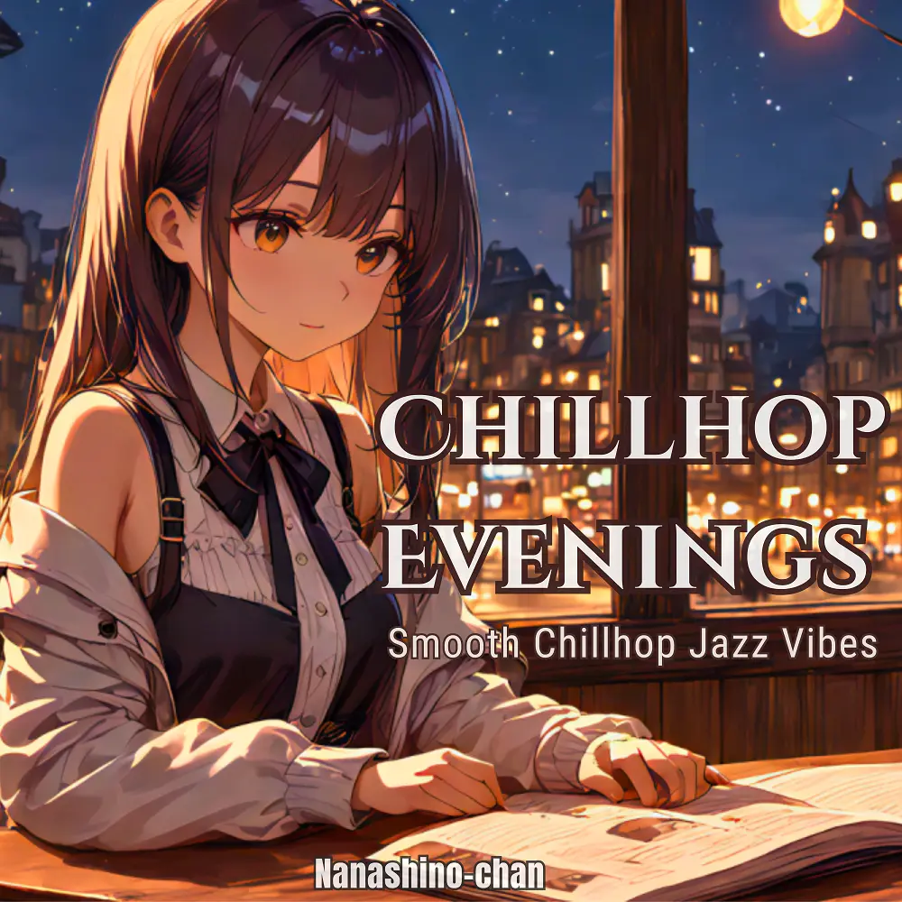

Chillhop
Chillhop Evenings:Perfect for Study, Chill, or a Quiet Night In
Nanashino-chan
Explore Chillhop Evenings:Perfect for Study, Chill, or a Quiet Night In by Nanashino-chan: 20 instrumental tracks spanning Chillhop. Start with Soft Breeze Introduction / Midnight Saxophone, preview the collection and find your favorites on streaming services.
2025-04-24 · Released · 20 tracks · Instrumental
Preview the album
The jacket stays here until you choose a track. Playback uses YouTube.
YOUTUBE PREVIEW
Choose a track to listen
The jacket stays here until you choose a track. Playback uses YouTube.
If playback is unavailable, open the album or track on the streaming service.
Find this album on streaming services
Links marked “search” open search results. Select the album or track on the service.
Track list 20
- 01Soft Breeze Introduction
- 02Midnight Saxophone
- 03Velvet Piano Rhythms
- 04Chillhop Streets
- 05Smooth Sunset Beats
- 06Jazz Vibes Flow
- 07Lo-Fi Reflections
- 08Easy Groove Session
- 09Late Night Melodies
- 10Gentle Jazz Escape
- 11Enchanted Echoes
- 12Dreamy Jazz Loops
- 13Evening Chill Vibes
- 14Urban Night Grooves
- 15Mellow Beats Fusion
- 16Cozy Rhythm Break
- 17Lo-Fi Horizon
- 18Smooth Groove Reflections
- 19Tranquil Jazz Moments
- 20Final Relaxing Vibe
Find a sound for your next post
Copy “Nanashino-chan + track title” and paste it into your social app’s music search. Availability depends on your region and account. Copying the name does not grant usage rights.